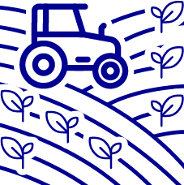
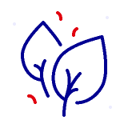

<div id="pat_popup" class="pat-popup" style="display:none;">
  
  <!-- HEADER FIXE (titre + bouton fermer) -->
  <div class="pat-popup__sticky-header" id="pat_popup_header" style="cursor:grab;">
    <button id="pat_popup_close" class="pat-popup__close">Fermer ×</button>
    <div class="pat-popup__header">
      <span id="pat_popup_nom"></span>
    </div>
    <div class="pat-popup__niveau" id="pat_popup_niveau"></div>
    <div class="pat-popup__annee"  id="pat_popup_annee"></div>
  </div>

  <!-- CONTENU SCROLLABLE -->
  <div class="pat-popup__scrollable">
    <hr class="pat-popup__sep">
    <h4>Indicateurs</h4>
    
    <div class="pat-popup__row">
      
      <span id="pat_popup_population"></span>
      <span class="pat-popup__secondary" id="pat_popup_pct_population"></span>
    </div>

    <div class="pat-popup__row">
      
      <span id="pat_popup_sau"></span>
      <span class="pat-popup__secondary" id="pat_popup_pct_sau"></span>
    </div>

    <div class="pat-popup__row">
      
      <span id="pat_popup_bio"></span>
      <span class="pat-popup__secondary" id="pat_popup_pct_sau_bio"></span>
    </div>

    <div class="pat-popup__row">
      
      <span id="pat_popup_restau"></span>
    </div>
    <span>*Surface Agricole Utile</span>
    <hr class="pat-popup__sep">
    <h4>Graphiques</h4>
    <div id="pat_popup_chart"></div>
    <span>Comparaison de la part de SAU Bio du PAT par rapport à la part de SAU Bio sur la région Auvergne-Rhône-Alpes.</span>
    <hr class="pat-popup__sep">
    <h4>Contacts</h4>
    <div class="pat-popup__contacts" id="pat_popup_contacts"></div>
    
    <!-- Futurs éléments ici -->
    
  </div>
</div>